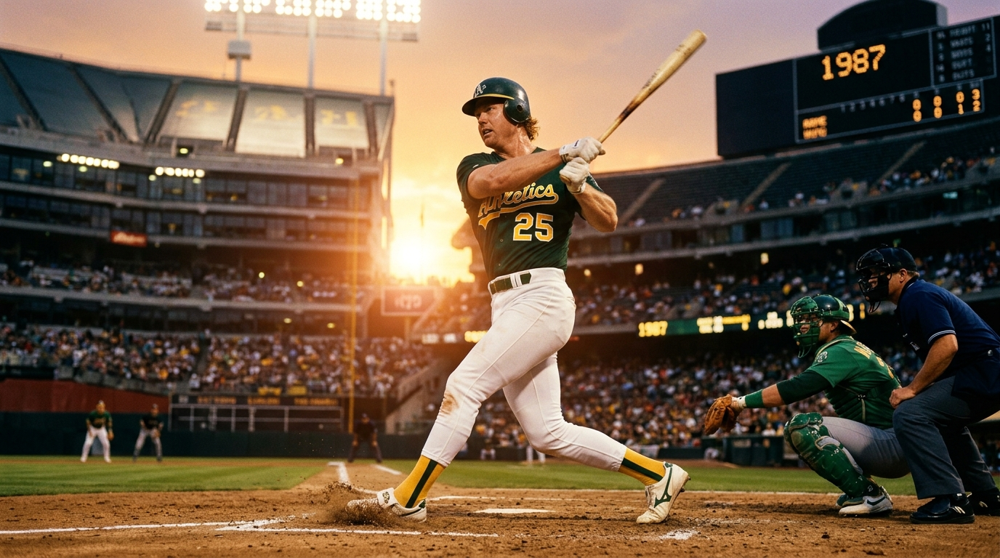
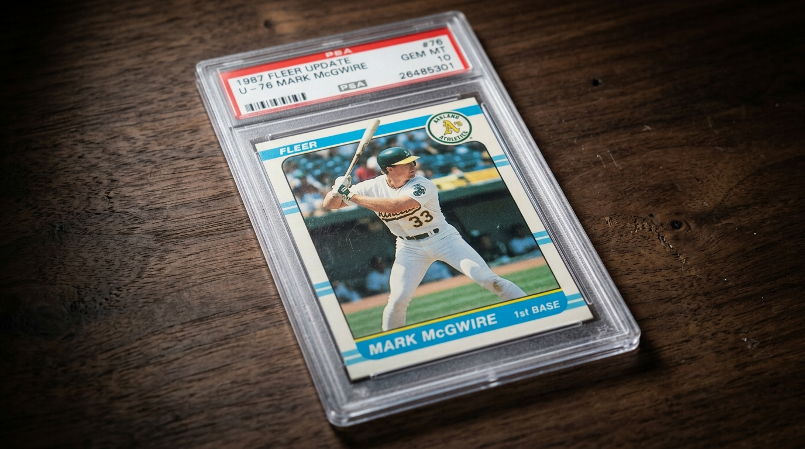
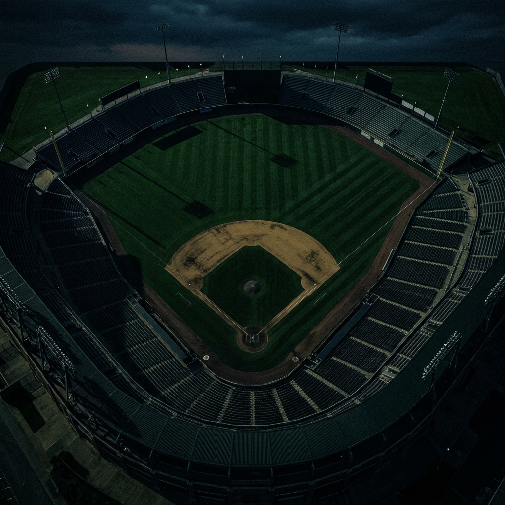
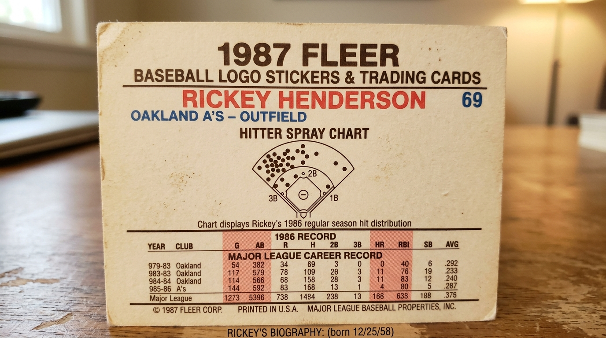
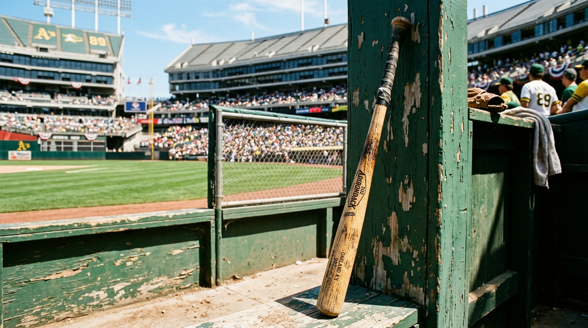

Before the Myth. Before the Bash.
Close your eyes and go back to the summer of 1987.
Before the record chases, before the controversy, there was just a 23-year-old rookie in
Oakland green and gold, violently introducing himself to the world. That year, Mark
McGwire didn’t just hit 49 home runs—he shattered the sky, fundamentally changing the geometry of
the game.

This 1987 Fleer Update (#U-76) isn’t just a baseball card. It is an artifact from ground zero of the McGwire legend.


While other sets were printing standard headshots, Fleer was giving true baseball nerds something better. Turn this card over, and you’re looking at a piece of baseball history: his minor league ascent from Modesto to Tacoma, capped off with Fleer’s iconic, quirky "spray chart" and hitter classification. It’s a literal map of a young giant learning how to conquer the major leagues.

You aren’t just buying cardboard. You’re reclaiming a piece of the late-80s. You’re holding the crack of the ash bat, the roar of the Coliseum, and the exact moment a kid from California became a baseball titan.
Curator's Notes:
- Era: 1987 (The Historic 49-HR Rookie Season)
- Artifact: Fleer Update #U-76
- Condition: Excellent (Preserved history)
- The Insider Detail: Features the legendary 80s Fleer "Hitter Spray Chart" on the reverse.